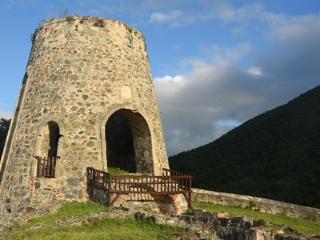

Virgin Islands National Park Travel Guide
Protected coastal and island ecosystem featuring tropical forests, coral reefs, historic ruins, and miles of hiking trails and beaches.
Top Locations


-400.jpg)

-400.jpg)
,_Mason_Street,_Cable-Car-Haltestelle_--_2022_--_2947-400.jpg)
Places to See in Virgin Islands National Park

Dough4872, CC BY-SA 4.0, via Wikimedia Commons; Image Size Adjusted
Annaberg Sugar Plantation
Historic sugar plantation ruins overlooking scenic island coastline
Catherineberg Estate Ruins
Hilltop plantation ruins with coral-stone walls and windmill tower

Cinnamon Bay
Expansive beach with calm waters and scenic tropical surroundings


Coral Reef Underwater Park Trail
Guided snorkel trail with submerged markers through living reef formations
Cruz Bay Visitor Center
Gateway to exploring the park's natural and cultural history
Francis Bay
Wide, shallow north shore bay ideal for families and birdwatching
Francis Bay Trail
Gentle loop through mangroves, salt pond, and coastal forest to the beach
Great Lameshur Bay
Remote southern bay with pale sand, clear water, and no commercial development
Hassel Island
Historic harbor island with layered maritime ruins and Caribbean history
Hawksnest Beach
Easy-access beach with soft sand and calm turquoise water
Leinster Bay Trail
Gentle seaside trail past Danish-era ruins with sweeping coastal views
Lind Point Overlook
Iconic hilltop overlook where emerald hills fall to luminous bays below
Lind Point Trail
Shaded coastal trail leading to some of the island's most beloved beaches
Little Lameshur Beach
Hidden cove with smooth stones, glowing blue water, and quiet seclusion
Honeymoon Beach
Beautiful beach known for calm water and scenic mountain backdrop
Maho Bay
Shallow bay famous for sea turtles and calm snorkeling conditions
Peace Hill Trail
Short uphill climb delivering sweeping panoramic views of the north shore
Peace Hill Windmill
Stone windmill monument to the island's agricultural past against open sky and sea
Princess Bay
Untouched shoreline with stone and sand and crystal-clear reef-visible water
Ram Head Peak
Dramatic southern peak with panoramic views and sweeping trade winds
Ram Head Trail
Hiking trail leading to dramatic cliffs and sweeping ocean views
Reef Bay Petroglyphs
Pre-colonial Taíno carvings etched into volcanic rock near a waterfall
Reef Bay Sugar Mill Ruins
Towering stone ruins of a plantation-era sugar mill deep in a tropical valley
Reef Bay Trail
Historic trail leading to waterfalls, ruins, and petroglyphs
Salt Pond Bay
Coastal bay serving as gateway to hiking trails and snorkeling spots
Waterlemon Cay
Offshore cay known for exceptional snorkeling and coral reefs
Salomon Beach
Secluded trail-access cove with smooth sand and calm reef-sheltered water
Windy Hill Greathouse Ruins
Elevated colonial ruins with commanding views over Waterlemon Bay
Yawzi Point
Rocky headland with rugged coastline and open Caribbean sea views
Overview
Virgin Islands National Park covers about two-thirds of the island of St. John in the U.S. Virgin Islands, along with offshore waters, a total of roughly 15,000 acres on land and sea. Dense tropical forests tumble down steep hillsides to white-sand beaches and turquoise bays, while coral reefs, seagrass beds, and mangroves just offshore harbor sea turtles, rays, and colorful fish. The park is also rich in history, with the ruins of Danish colonial sugar plantations, ancient Taíno petroglyphs, and historic structures showing the layered story of the island. It is a UNESCO Biosphere Reserve.
Much of the land was donated by Laurance S. Rockefeller, who bought it in the 1950s and gave it to the federal government, and the park was established in 1956. People come to swim and snorkel at beautiful beaches such as Trunk Bay, hike through tropical forest to ruins and petroglyphs, and relax on a quiet Caribbean island that has no large resorts and few cars. It is a favorite of snorkelers and a base for sailing trips to the British Virgin Islands.
Park Sections
The park covers most of St. John and is organized along its coast. Cruz Bay, the main town and ferry landing, has the visitor center and the Lind Point Trail. The north shore has the park's best-known beaches, including Hawksnest, Trunk Bay, Cinnamon Bay, and Maho Bay. Farther east, Annaberg and Leinster Bay have plantation ruins and snorkeling at Waterlemon Cay. The quiet south shore has Salt Pond Bay and the Lameshur bays, and Hassel Island is in St. Thomas harbor.
Sightseeing and Exploring the Park
North Shore Road (Route 20) is the main scenic drive, winding along the coast past overlooks of beaches and bays, including the famous view over Trunk Bay. Driving is on the left, and the roads are narrow and steep, so many visitors take open-air safari taxis or rent a vehicle. Key sights include Annaberg Sugar Plantation, with its windmill, factory ruins, and views of the British Virgin Islands, the Peace Hill Windmill, and the Lind Point Overlook. The Centerline Road crosses the island and leads to Coral Bay and the East End.
Hiking
The park has about 20 trails totaling more than 20 miles. Easy walks include the Francis Bay Trail, a short loop good for birdwatching, and the Peace Hill Trail. The Reef Bay Trail, about 2.2 miles one way, descends through forest to ancient petroglyphs and the Reef Bay Sugar Mill ruins, and rangers lead guided hikes that include a boat ride back. The Leinster Bay Trail (about 1.5 miles one way) leads to Waterlemon Cay, and the Ram Head Trail climbs to a dramatic headland. Hikes are hot and humid, so carry water.
Other Activities
Snorkeling is the signature activity, with the Trunk Bay underwater snorkel trail, Waterlemon Cay, Salt Pond Bay, and Cinnamon Bay popular, and equipment rentals are available in Cruz Bay and at some beaches. Other activities include scuba diving, kayaking, stand-up paddleboarding, sailing charters, camping, ranger programs, stargazing, and visiting cultural sites. Many visitors take day trips by boat to the British Virgin Islands. The park does not have cave tours, but there are guided snorkel and boat tours from Cruz Bay.
Flora and Wildlife
The island's vegetation includes dry forest, moist forest, mangroves, and seagrass beds, with trees such as kapok, mango, and bay rum, and cacti in drier areas. Offshore, the reefs support hundreds of fish, hawksbill and green sea turtles, rays, and corals, although the corals have been damaged by bleaching and disease. On land, wildlife includes feral donkeys, which roam the roads, mongooses, white-tailed deer, lizards, and birds such as pelicans, bananaquits, and the Caribbean hummingbird. Viewing is on your own, and snorkeling is the best way to see sea turtles. Do not feed the donkeys or touch the corals.
Access
St. John has no airport. Most visitors fly into Cyril E. King Airport on St. Thomas, which has flights from the U.S. mainland, then take a taxi to Red Hook and the 20-minute ferry to Cruz Bay, which runs about hourly. A second ferry runs from Charlotte Amalie to Cruz Bay in about 45 minutes. U.S. citizens do not need a passport to travel from the mainland, but they do need one to visit the British Virgin Islands. A car barge carries vehicles between St. Thomas and St. John. On the island, taxis, safari buses, and rental vehicles are the main means of transportation.
Seasons
The dry season, from December to April, is the busiest and driest season, with sunny weather and calmer seas. Summer is hotter and less crowded, with occasional storms. Hurricane season runs from June to November, and Hurricanes Irma and Maria in 2017 caused major damage to the island and its facilities, and recovery has taken years. Some facilities have limited or changing hours. Water temperatures stay warm all year, and snorkeling is usually good. Check with the park for current conditions and any closures.
Camping and Lodging
The park has one campground, Cinnamon Bay Campground, which offers tents, cottages, and campsites by the beach, and it has had interruptions in operation since the 2017 hurricanes, so check its current status. There are no other lodgings in the park, but St. John has a range of places to stay, from resorts such as the Westin St. John and Gallows Point to eco-resorts, villas, and guesthouses in Cruz Bay and Coral Bay. Many visitors rent villas, and the historic Caneel Bay resort, inside the park, has been closed since the hurricanes. Book early for the winter season.
Visitor Centers
The Cruz Bay Visitor Center is the park's main visitor center, next to the ferry dock. It has exhibits, a film, a bookstore, and rangers who can help with maps, trail information, and ranger programs. Smaller contact stations are located at Trunk Bay and Annaberg in season. Hours vary, so check the National Park Service website before you go.
This article uses material from the Wikipedia articles and official tourism pages for Virgin Islands National Park, which are released under the Creative Commons Attribution-Share-Alike License 3.0. Additional information comes from the National Park Service Virgin Islands National Park website.